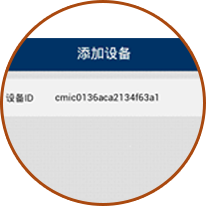
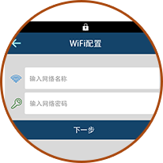

3.adım: cihaz ekle
- WiFi yapılandırmak sonra yeni cihaz otomatik olarak hesabınıza bağlı olacaktır.
- Zaten yetki istemek için sizi teşvik edecektir cihaz başkaları tarafından bağlı.

|
4. adım: WiFi yapılandırma
- WiFi yapılandırma işlemi, kablosuz ağ kullanılabilir tutmak gerekir.
- Muhtemelen 30-60 saniye yapılandırma sürecini ihtiyacı test ağ ortamında karar verir.
- WiFi LED sonra kameranın altındaki bekliyor yeşil ışık, ağ yapılandırması başarılı olduğunu gösterir.
- Cihaz listesi sayfası başarılı yapılandırmadan sonra otomatik atlama.

|